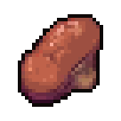

Opened by tapping a building on the map, or its card on the Network tab. The top row is the building's flow, read left to right: who works it → what it makes → what it holds → where it goes. Posting takes the second tap. All mockups
Empty state: locals only, nothing in stock, not on the route. The ember button is the next step.

1.1/hNormal state: a Farmer posted, stock building up, the cart calling as stop 1 of 3. Collect is off with its reason, since the player is away.
Walk to the farm to collect (780 m).
Full state: everything that needs attention, most urgent first. Each state has a word or icon as well as its colour.
The farm leaves in 9 h. Stock the cart hasn't taken is lost; Bram comes home.